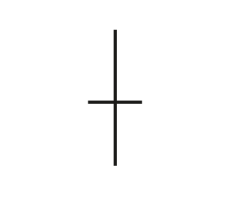
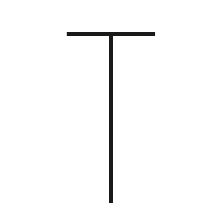
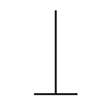
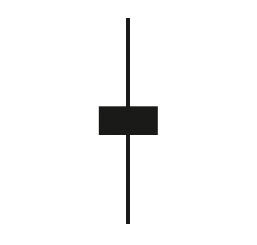
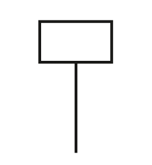
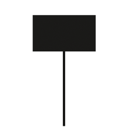
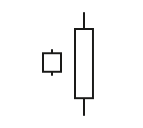
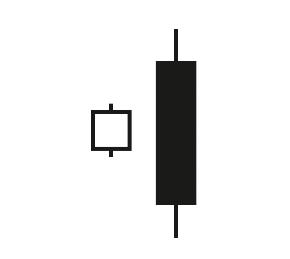

<!DOCTYPE html>
<html>
</html>
<head>
  <meta charset="utf-8">
  <meta http-equiv="X-UA-Compatible" content="IE=edge">
  <title>外汇站（fx-z.com） - 日本蜡烛图基本形态</title>
  <meta name="description" content="">
  <meta name="viewport" content="width=device-width, initial-scale=1">
  <meta name="robots" content="all,follow">
  <!-- Bootstrap CSS-->
  <link rel="stylesheet" href="vendor/bootstrap/css/bootstrap.min.css">
  <!-- Font Awesome CSS-->
  <link rel="stylesheet" href="vendor/font-awesome/css/font-awesome.min.css">
  <!-- Google fonts - Roboto-->
  <link rel="stylesheet" href="https://fonts.googleapis.com/css?family=Roboto:400,300,700,400italic">
  <!-- owl carousel-->
  <link rel="stylesheet" href="vendor/owl.carousel/assets/owl.carousel.css">
  <link rel="stylesheet" href="vendor/owl.carousel/assets/owl.theme.default.css">
  <!-- theme stylesheet-->
  <link rel="stylesheet" href="css/style.default.css" id="theme-stylesheet">
  <!-- Custom stylesheet - for your changes-->
  <link rel="stylesheet" href="css/custom.css">
  <!-- Favicon-->
  <link rel="shortcut icon" href="img/favicon.png">
  <!-- Tweaks for older IEs--><!--[if lt IE 9]>
    <script src="https://oss.maxcdn.com/html5shiv/3.7.3/html5shiv.min.js"></script>
    <script src="https://oss.maxcdn.com/respond/1.4.2/respond.min.js"></script><![endif]-->
</head>
<body>
  <div id="all">
    <div class="container-fluid">
      <div class="row row-offcanvas row-offcanvas-left"> 
        <!--   *** SIDEBAR ***-->
        <div id="sidebar" class="col-md-4 col-lg-3 sidebar-offcanvas">
          <div class="sidebar-content">
            <h1 class="sidebar-heading"> <a href="https://fx-z.com">fx-z.com</a></h1>
            <p class="sidebar-p">介绍外汇相关的基本知识，告诉您如何进行自己的技术面和基本面分析，讲解先进的交易理念，并且为您阐述失败交易者与专业交易者之间的真正区别。 </p>
            <p class="sidebar-p">通过这些课程的学习，您将学会如何根据自己的优势来应用情绪分析，还将了解真实世界的事件会对货币汇率产生什么影响，央行在外汇市场中所发挥的作用，以及交易者在颇受欢迎的即期外汇交易中有哪些选择方案。 </p>
            <ul class="sidebar-menu">
                <!-- Link-->
                <li class="sidebar-item"><a href="https://fx-z.com" class="sidebar-link">首页</a></li>
                <!-- Link-->
                <li class="sidebar-item"><a href="cihui.html" class="sidebar-link">外汇词汇</a></li>
                <!-- Link-->
                <li class="sidebar-item"><a href="ebook.html" class="sidebar-link">获取外汇电子书</a></li>
            </ul>
            <p class="social"><a href="https://www.cn-forextime.com/zh?partner_id=4920383" target="_blank"data-animate-hover="pulse" class="external facebook"><i class="fa fa-eur"></i></a><a href="https://www.cn-forextime.com/zh?partner_id=4920383" target="_blank" data-animate-hover="pulse" class="external gplus"><i class="fa fa-gbp"></i></a><a href="https://www.cn-forextime.com/zh?partner_id=4920383" target="_blank" data-animate-hover="pulse" class="external twitter"><i class="fa fa-rmb"></i></a><a href="https://www.cn-forextime.com/zh?partner_id=4920383" target="_blank" title="" class="external instagram"><i class="fa fa-dollar"></i></a><a href="https://www.cn-forextime.com/zh?partner_id=4920383" target="_blank" data-animate-hover="pulse" class="email"><i class="fa fa-money"></i></a></p>
            <div class="copyright text-center text-md-left">
             
              
            </div>
          </div>
        </div>
        <!--   *** SIDEBAR END ***  -->
        <!--   *** DETAIL ***-->
        <div class="col-md-8 col-lg-9 content-column white-background">
          <div class="small-navbar d-flex d-md-none">
            <button type="button" data-toggle="offcanvas" class="btn btn-outline-primary"> <i class="fa fa-align-left mr-2"></i>菜单</button>
            <h1 class="small-navbar-heading"> <a href="https://fx-z.com/7-1.html">下一篇 </a></h1>
          </div>
          <div class="row">
            <div class="col-xl-10">
              <div class="content-column-content">
                <h1>日本蜡烛图基本形态</h1>
       <p>
    有些蜡烛图是独立绘制的，具有特定的含义，而有些蜡烛图需要与其它出现在特定形态组合之前或之后的蜡烛图结合使用及解读。外汇行业的独立蜡烛图主要包括十字星、纺锤线、锤形线或上吊线。
</p>
<p>
    由多个蜡烛图组合而成的形态远远多于独立绘制、含义特别的蜡烛图。具体组合包括星状、多头吞噬或空头吞噬、孕线、晚星和晨星、白三兵或三只黑乌鸦、平头底部或平头顶部等。蜡烛图形态共有 100 多种，但仅学习几种也有助于您了解市场情绪。许多人认为蜡烛图形态能出色地判断逆转点；在外汇行业，许多人也赞同这一观点：如果不至少学习一种关键形态，这肯定是您的损失。
</p>
<p>
    <strong>独立蜡烛图</strong>
</p>
<p>
    十字星是一种特别的蜡烛图。其开盘价和收盘价极为接近，导致它的实体仅有一条线。最高价和最低价位于顶部和底部以内的突出位置，但主要活动——开盘价与收盘价之间的范围——非常小。十字星看起来像一个“+”号。这种形态意味着，买家可能试图在交易时段推高价格，但收盘价无法上穿开盘价。同样，卖方可能在交易时段遇到更低的价格，但收盘价无法上穿开盘价。同样，卖方可能在交易时段遇到更低的价格，但收盘价无法下穿开盘价。日内交易的多空力量僵持不下，买卖双方势均力敌。出现十字星——或更糟糕的是，出现一群十字星——意味着市场陷入僵局、游移不定。若要继续进行交易，市场需要新因素的刺激，而且该因素出现时，价格将获得突破。
</p>
<p>
     
</p>
<p>
    <strong>十字星蜡烛图</strong>
</p>
<p>
    当十字星的下影线很长，即开盘价与收盘价相同，且接近下影线顶端，这种形态被称为蜻蜓十字星。若多个收盘价逐渐下跌之后出现蜻蜓十字星，说明跌势正在结束——空头势力无法将收盘价推低至开盘价以下。当十字星的上影线很长，即开盘价与收盘价相同，且接近上影线底端，这种形态被称为墓碑十字星。在外汇行业，若上升趋势中出现墓碑蜡烛图，意味着多头势力无法将收盘价推高至开盘价之上——请保持警惕。
</p>
<p>
     
</p>
<p>
    <strong>蜻蜓蜡烛图</strong>
</p>
<p>
     
</p>
<p>
    <strong>墓碑蜡烛图</strong>
</p>
<p>
    纺锤线蜡烛图的上影线和下影线比实体长。如十字星一样，稍加思索即可知道它为何代表市场缺乏方向性——交易者遇到一波急涨，但无法让货币在高位收盘，而且遇到一波急跌后，无法让货币在低位收盘。
</p>
<p>
     
</p>
<p>
    <strong>纺锤线蜡烛图</strong>
</p>
<p>
    若出现一系列十字星或纺锤线，而且其收盘价相互差距不远，这是一种危险信号——说明市场正在区间内震荡交易，需要突破刺激。
</p>
<p>
    锤形线下影线较长，意味着开盘后价格走低，但之后反弹至开盘价附近，但收盘时仍低于开盘价。这意味着，这种蜡烛图是黑色或实心，若前市已出现一系列下跌的蜡烛线，那么它是一种整理形态。若前市已出现一系列上涨的蜡烛图，且后市看跌，那么这种蜡烛图被称为上吊线，因为它释放了涨势可能终结的信号。可以说，锤形线并不是真正的独立形态，但您往往先将它看成独立形态，然后才意识到，您还需要观察它之前的走势。
</p>
<p>
     
</p>
<p>
    <strong>锤形线蜡烛图</strong>
</p>
<p>
     
</p>
<p>
    <strong>上吊线蜡烛图</strong>
</p>
<p>
    <strong>组合形态</strong>
</p>
<p>
    星状蜡烛图与前一个蜡烛图分开而立——由缺口分开。缺口通常反映了特殊情况，尤其是在几乎从不休市的外汇市场中。突发新闻或事件使价格向上或向下跳空并产生缺口。星状蜡烛图有各种形式，但实体始终较小——意味着缺口虽然顾名思义，但市场至少仍有一点不确定性。在蜡烛图中，缺口的术语是一个暗示性名称——上升（或下降）窗口。若星状形态是一个位于上升窗口之上的白色蜡烛，且前市为涨势，这通常意味着价格涨势即将结束。乍一想来，这似乎有悖于常理，但如果您将该缺口视为最后一丝机会，这就不难理解。下一根蜡烛线很可能是黑色，而且能够很好地“填补缺口”（补空）。
</p>
<p>
    吞噬蜡烛与十字星相反，它的实体非常长，以致于开盘价及收盘价均超过前一根蜡烛线的开盘价及收盘价。如所有蜡烛线一样，蜡烛实体越大，意味着时段内的交易行为越多。多头吞噬蜡烛线的开盘价低于前一日蜡纸图实体的底部，而收盘价高于前一日实体——交易量大，且结尾利好。空头吞噬蜡烛图为黑色实体，它的开盘价高于前一时段蜡烛图实体的顶部，但之后丢盔弃甲，且收盘价低于前一个蜡烛图实体。相对较大的实体“吞噬”了前一时段的蜡烛图实体，并且意味着强劲的市场情绪。多头吞噬和空头吞噬蜡烛图均能在外汇行业中见到，而且大部分时候较为可靠。
</p>
<p>
     
</p>
<p>
    <strong>多头吞噬蜡烛图形态</strong>
</p>
<p>
     
</p>
<p>
    <strong>空头吞噬蜡烛图形态</strong>
</p>
<p>
    不太适用于外汇行业的形态是白三兵和三只黑乌鸦。它们有三根连续的长蜡烛线。按照传统解释，第 4 根蜡烛线也将依次拉高（或收低），但外汇行业的实情并非如此。下一个最高价或最低价可能会延续走势，但收盘价未必照做。这是众多示例之一，让交易者得知，在一些情况下，有必要将蜡烛图与其它指标，尤其是动量、相对强度和 MACD 结合使用。
</p>
<p>
    如上所示，蜡烛图共有 100 多种，但与其它形态相比，专门研究蜡烛图的书籍和网站更多。对于机械指标，蜡烛图是一种优秀的矫正方法，因为它不断提醒我们，我们不是与物理或工程交易，而是与人类情绪交易。蜡烛图语言很有用处——如上吊线、墓碑线、弃婴线。不过，需要牢记的一点是，与任何其它指标一样，蜡烛图有指示作用，但没有支配作用。而且其预测价值只能延伸到下一个图形。
</p>
<p>
    <br/>
</p>
<p>
    <br/>
</p>
              </div>
            </div>
          </div>
        </div>
      </div>
    </div>
  </div>
  <!-- JavaScript files-->
  <script src="vendor/jquery/jquery.min.js"></script>
  <script src="vendor/popper.js/umd/popper.min.js"> </script>
  <script src="vendor/bootstrap/js/bootstrap.min.js"></script>
  <script src="vendor/jquery.cookie/jquery.cookie.js"> </script>
  <script src="vendor/owl.carousel/owl.carousel.min.js"></script>
  <script src="vendor/masonry-layout/masonry.pkgd.min.js"></script>
  <script src="js/front.js"></script>
</body>